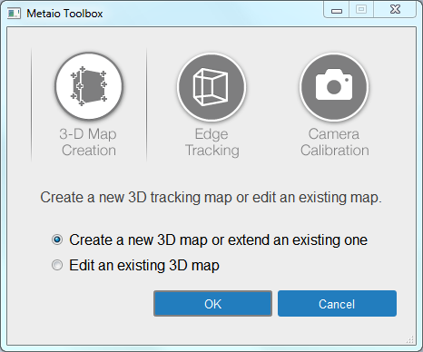
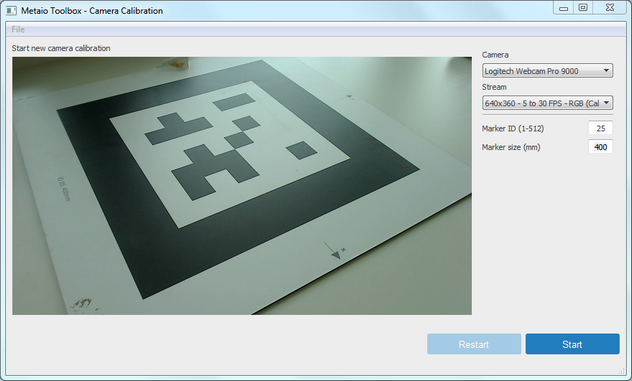
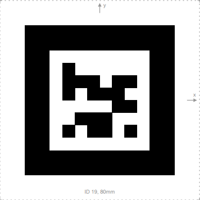
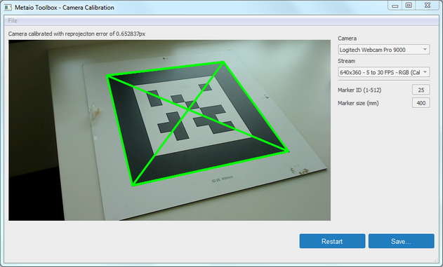
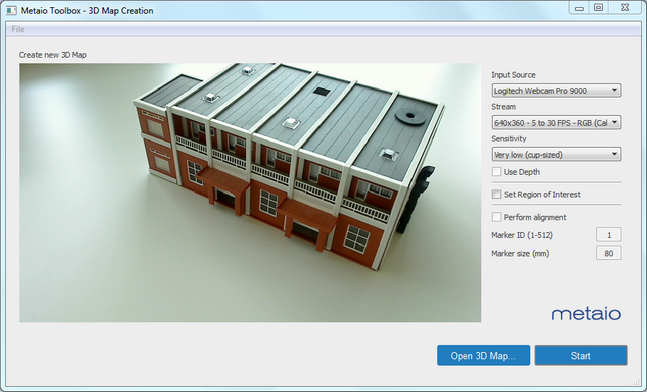
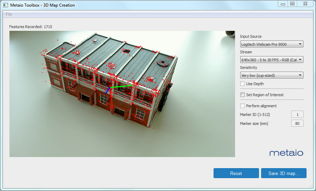
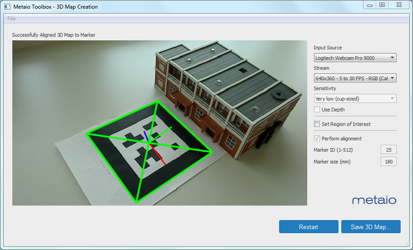
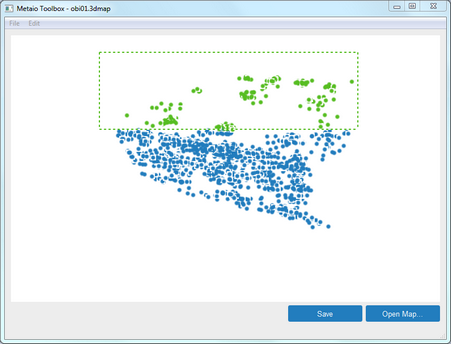
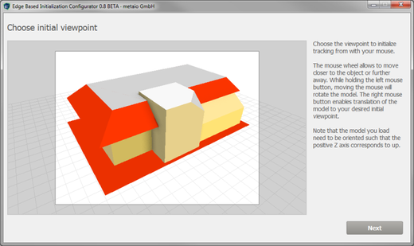
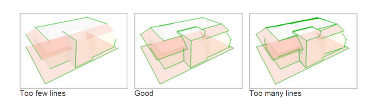

|
Use the Metaio Toolbox to create or edit 3D tracking maps of textured objects. The resulting 3D tracking maps are needed for 3D feature-based or edge-based tracking. The toolbox also provides camera calibration for better tracking accuracy.
Run the toolbox executable $(RSSDK_DIR)/contrib/Metaio/MetaioTrackerToolbox/MetaioTrackerToolbox.exe. The toolbox landing page for feature selection is shown in Figure 38.

Figure 38: The Tool Box Landing Page
Calibrating the Camera
With the help of ID markers, the toolbox can calibrate tracking parameters to an individual camera device for better tracking results. To calibrate the camera, follow the steps:
| • | Select Camera Calibration from the toolbox landing page, as illustrated in Figure 38. The toolbox page for camera calibration is shown in Figure 39. |

Figure 39: The Camera Calibration Page
| • | Select the camera, the camera resolution (ideally matching the resolution used in tracking and 3D map creation), and enter the ID marker identifier and its size on the right of the page. ID markers, similar to Figure 40, are specially designed image patterns for camera calibration. See all the ID markers here. |

Figure 40: The 19th ID Marker
| • | Press the Start button to start the calibration process. |
| • | Show the ID marker to the camera and slowly move it so that the toolbox can capture all angles of the ID marker. In each capture, hold the ID marker for a few seconds to allow a stable capture. When the marker overlay turns green, as shown in Figure 41, the calibration process is completed. You can then save the calibration parameters. |

Figure 41: A Completed Calibration
Creating Feature-based 3D Maps
To capture the features of a real world scene/object and save it for later use, complete the following steps:
| • | Select 3D-Map Creation in the toolbox landing page (see Figure 38) for this feature. Figure 42 shows the 3D map creation page. |

Figure 42: Feature-based 3D Map Creation
| • | From the right side of the page, select the camera device, the stream resolution. In addition, you can select Sensitivity, which is the size of the object to be tracked. Estimating the right size helps the tracking initialization. |
| • | Show the object to the camera so that the toolbox can learn its 3D structure. Move the object around so that the toolbox can see all aspects of the object. The toolbox visualizes the detected features as illustrated in Figure 43. |

Figure 43: The Detected Features
| • | Complete the 3D map creation by pressing the Save 3D map button. The toolbox saves the 3D map into a *.slam file. |
The toolbox can extend an existing 3D map by adding more detected features, or aligning it with an ID marker (setting the coordinate origin as illustrated in Figure 44). Use the Edit an existing 3D map option from the landing page for this feature.

Figure 44: Align an Object with an ID Marker
In addition, the toolbox enables editing the feature points of an existing 3D map. To do this:
| • | Drag the point cloud of points around with the mouse movement. |
| • | Select the feature points by holding down the ALT key. |
| • | Use the DEL or Backspace key to delete the selected feature points, as illustrated in Figure 45. |

Figure 45: Remove False Positives
Edge Tracking
The toolbox can create the tracking configuration from any existing CAD model. To use this feature, select the Edge Tracking tool from the toolbox landing page and follow the steps below:
| • | Load the CAD model. The toolbox supports the wavefront *.obj format. It is recommended that the model be created with high resolutions and rich texture information. The higher the resolution of the model and its texture information, the more accurate the created line model is. It should be in a scale of 1.0 for 1 millimeter and be oriented with the Y-axis pointing forward and the Z-axis pointing up. |

Figure 46: Edge Creation Tool
| • | Select the view pose to initialize the tracking by moving the mouse and zooming with the mouse wheel, as illustrated in Figure 46. The grid around the model indicates the model orientation, with the Z-axis pointing up. Press the Next button when done. |
| • | At this stage, the toolbox shows the overlay of line segments on top of the CAD model. You can adjust the level of details of the created line model using the slider bar on the right. The right level of details is that the line segments include all or most of the prominent distinguishable edges visible, without creating too short or cluttered lines, as illustrated in Figure 47. |

Figure 47: Example of the Ideal Edge Number
| • | Click Accept to export the model files and the tracking configuration file. The toolkit creates a surface model file SurfaceModel.obj stripped of unnecessary information such as material data, and a line segment model file LineModel.obj. The tracking configuration file is named Tracking.xml. |
|